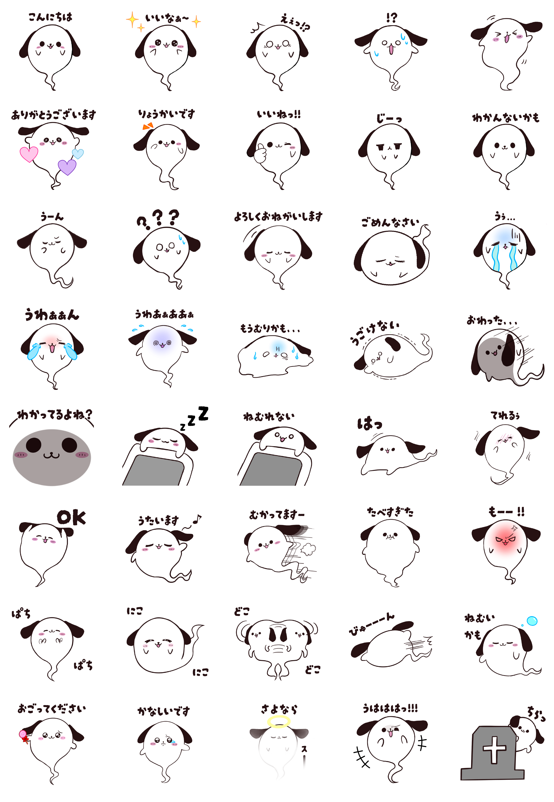

オリジナルLINEスタンプ
- 自主制作
- URL：LINEクリエイターズマーケットはこちら

| 概要 | 単体でも使いやすいことを意識して制作した、オリジナルのLINEスタンプです。
日常会話の中で気軽に送れるよう、シンプルでわかりやすい表現を意識しました。 |
|---|---|
| 制作数 | 全40個 |
| 制作期間 | 約2週間 |
| 使用したツール | Photoshop / illustrator / procreate |
オリジナルLINEスタンプ

| 概要 | 単体でも使いやすいことを意識して制作した、オリジナルのLINEスタンプです。
日常会話の中で気軽に送れるよう、シンプルでわかりやすい表現を意識しました。 |
|---|---|
| 制作数 | 全40個 |
| 制作期間 | 約2週間 |
| 使用したツール | Photoshop / illustrator / procreate |